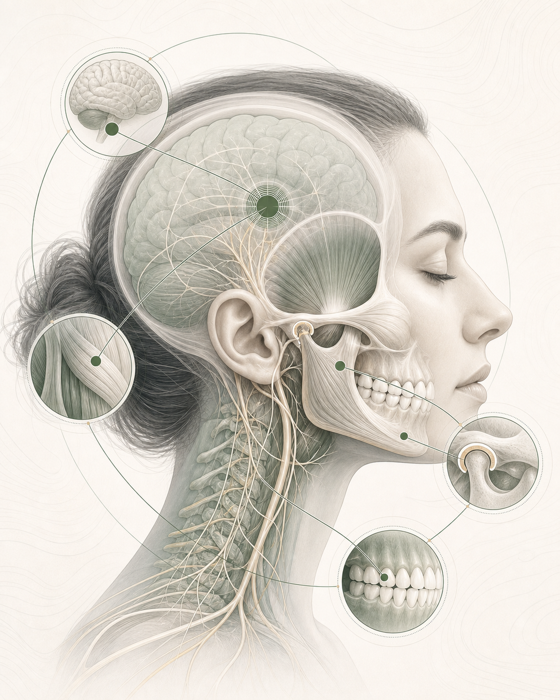

Brain
Восприятие и модуляция боли, центральная сенситизация, неврологические и психоэмоциональные факторы.
Концепция объединяет нервную систему, мышцы, височно-нижнечелюстной сустав и окклюзию. Врач сопоставляет данные и выбирает обоснованную тактику для конкретной клинической ситуации.
BMJO развивается в клинической практике, образовании и научной работе Дмитрия Юдина.


Единая функциональная система
Боль, щелчки и ограничение открывания рта могут поддерживаться несколькими механизмами. Сходные жалобы требуют отдельной диагностики и своего плана лечения.
Модель BMJO
Каждый раздел отвечает на свой набор вопросов. Решение формируется после сопоставления всех значимых данных.
Восприятие и модуляция боли, центральная сенситизация, неврологические и психоэмоциональные факторы.
Тонус, координация, болезненность, защитные двигательные паттерны и адаптация жевательных мышц.
Положение диска, костные и мягкотканные структуры, воспаление, объем движения и стадия процесса.
Контакты зубов, положение нижней челюсти, состояние зубных рядов и устойчивость реабилитации.
Принципы
Работа начинается с жалоб, анамнеза, осмотра и клинической гипотезы.
Каждое исследование должно отвечать на клинический вопрос и влиять на тактику.
Контакты зубов рассматриваются вместе с суставом, мышцами и механизмами боли.
План включает понятную последовательность действий и контрольные точки.
Состав команды определяется задачами пациента и результатами диагностики.
Динамика оценивается по боли, функции, движениям и устойчивости результата.
Клиническая задача
«Задача врача состоит в том, чтобы определить механизмы симптомов конкретного пациента и обосновать решение на каждом этапе лечения».Дмитрий Юдин
Сравнение подходов
Специалистам
Зарегистрированные разработки в области диагностики, лечения и реабилитации.
Научные материалы по ВНЧС, хронической боли и функциональной реабилитации.
Последовательность диагностики, выбора тактики и контроля динамики.
Разбор симптомов, диагноза, этапов лечения и срока наблюдения.
Пациентам
На консультации врач выясняет характер жалоб, оценивает движения нижней челюсти, сустав, мышцы и прикус. Состав исследований определяется после осмотра.

Связаться
Можно записаться на консультацию, обсудить клинический случай, обучение, исследование или сотрудничество.